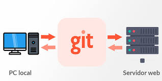
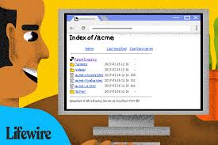
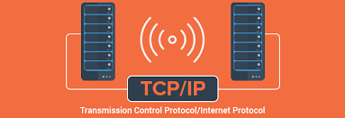
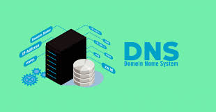

Bienvenido. Este glosario reúne definiciones clave relacionadas con la asignatura de Pensamiento algorítmico. Aquí encontrarás explicaciones claras y concisas de los conceptos esenciales para ayudarte a comprender y dominar el tema.
Pseudocódigo:
Es una representación de un algoritmo utilizando una combinación de lenguaje natural y elementos de lenguajes de programación. Se utiliza para diseñar y explicar un algoritmo antes de escribir el código real.
Nemotécnico / Nemotecnia:
Se refiere a una técnica o truco para mejorar la memoria. Por ejemplo, un acrónimo o una frase fácil de recordar utilizada para memorizar información.
Variable:
En programación, es un espacio de almacenamiento que puede contener datos que pueden cambiar o variar durante la ejecución de un programa. Cada variable tiene un nombre que la identifica y un tipo de dato.
Concatenar:
En programación, es el proceso de unir dos o más cadenas de texto en una sola. Por ejemplo, concatenar "Hola" y " Mundo" resultaría en "Hola Mundo".
Sinergia:
Es el efecto cooperativo de dos o más elementos que, al trabajar juntos, producen un resultado mayor que la suma de sus efectos individuales.
CSS (Cascading Style Sheets):
Es un lenguaje de estilo utilizado para describir la presentación de un documento escrito en HTML o XML. CSS controla el diseño, los colores, las fuentes y la disposición del contenido de las páginas web.

If en programación:
Es una estructura de control que permite ejecutar un bloque de código solo si una condición específica es verdadera. Si la condición es falsa, el bloque de código no se ejecuta.
Modem:
Dispositivo que modula y demodula señales para permitir la transmisión de datos digitales a través de líneas analógicas, como las líneas telefónicas. Su función principal es conectar computadoras a Internet.
Router:
Dispositivo que dirige el tráfico de datos entre diferentes redes informáticas, como la red doméstica y la Internet. Determina el mejor camino para los datos hacia su destino.
Servidor:
Es una computadora o sistema que proporciona recursos, datos, servicios o programas a otras computadoras, conocidas como clientes, a través de una red.

Servidor Git:
Es un servidor que aloja repositorios Git, que son colecciones de código fuente y su historial de cambios. GitHub y GitLab son ejemplos de servicios de alojamiento de servidores Git.

JS (JavaScript):
Lenguaje de programación interpretado que se utiliza principalmente para añadir interactividad y funcionalidad dinámica a las páginas web. JavaScript se ejecuta en el navegador del cliente.

Index.html:
Es el nombre de archivo predeterminado para la página principal de un sitio web. Es el primer archivo HTML que el navegador carga cuando se accede a un sitio web.

Dirección IP:
Identificador único asignado a cada dispositivo conectado a una red que utiliza el Protocolo de Internet (IP) para la comunicación. Una dirección IP puede ser estática o dinámica.

File en programación:
Generalmente se refiere a archivos que se manejan en la programación, ya sea para lectura, escritura, o ejecución de código.
PNG (Portable Network Graphics):
Es un formato de archivo de imagen que utiliza compresión sin pérdida. Es comúnmente usado para gráficos web, ya que admite transparencia y una amplia gama de colores.
GitHub:
Plataforma de desarrollo colaborativo para alojar proyectos utilizando el sistema de control de versiones Git. Permite a los desarrolladores colaborar en proyectos de software, compartir código y contribuir a proyectos de código abierto.

TCP (Transmission Control Protocol):
Protocolo de red que garantiza la entrega fiable y ordenada de un flujo de bytes entre dos dispositivos en una red. Es uno de los protocolos principales en la suite de protocolos de Internet.

IP (Internet Protocol):
Protocolo de comunicación utilizado para transmitir datos a través de redes digitales. Define el formato de los paquetes y el esquema de direccionamiento para la transmisión de datos.
DNS (Domain Name System):
Sistema de nombres de dominio que traduce nombres de dominio amigables para los humanos (como www.example.com) en direcciones IP numéricas utilizadas por las computadoras para comunicarse.

Hosting:
Servicio de almacenamiento en línea que permite a los usuarios almacenar y publicar su contenido (como sitios web, aplicaciones y datos) en servidores conectados a Internet.
Red LAN (Local Area Network):
Red de computadoras que conecta dispositivos dentro de un área geográfica limitada, como una casa, oficina o edificio. Las redes LAN suelen utilizar Ethernet o Wi-Fi para la comunicación.